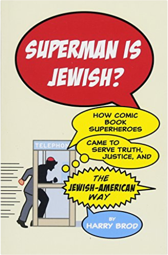

Books
1
2
3
4
5

Superman Is Jewish?: How Comic Book Superheroes Came to Serve Truth, Justice, and the Jewish-American Way
Brod, Harry
I'd Tell You I Love You, But Then I'd Have to Kill You
Carter, Ally
The Selection
Cass, Kiera
The Bride Was a Boy
Chii
1,000 Character Writing Prompts: Villains, Heroes and Hams for Scripts, Stories and More
Cohen, Bryan
The Million Dollar Blog
Courtenay-Smith, Natasha
Mastering Manga 2: Level Up with Mark Crilley
Crilley, Mark
Mastering Manga 3: Power Up with Mark Crilley
Crilley, Mark
Mastering Manga with Mark Crilley: 30 drawing lessons from the creator of Akiko
Crilley, Mark
Story Genius: How to Use Brain Science to Go Beyond Outlining and Write a Riveting Novel
Cron, Lisa
Pop Manga: How to Draw the Coolest, Cutest Characters, Animals, Mascots, and More
d'Errico, Camilla, Martin, Stephen W.
Dreadnought
Daniels, April
1
2
3
4
5


 Made with Delicious Library Made with Delicious Library
Made with Delicious Library Made with Delicious Library